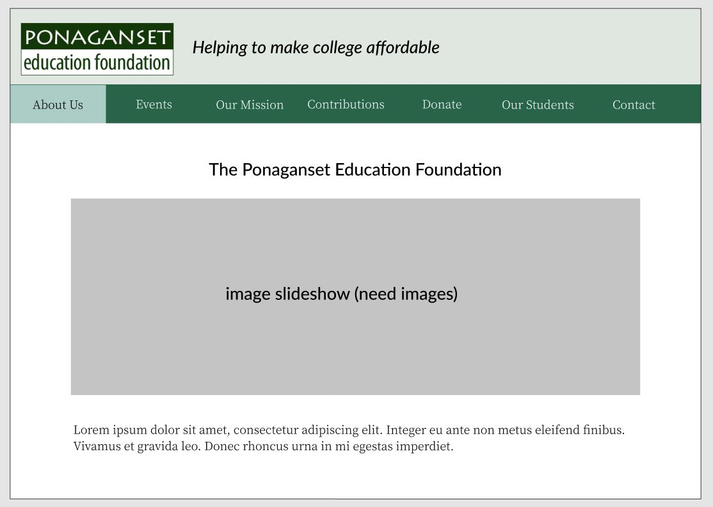
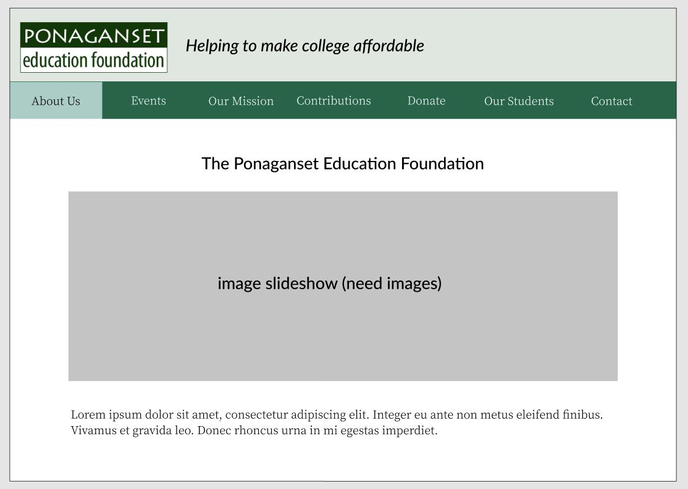

Ponaganset Education Foundation
Step 1 - Discuss
Determined important aspects of the website by working with members of the Board of the Ponaganset Education Foundation. It was decided that the following details were most crucial:- Accessibility - a lot of the people that would be accessing the website weren't neccessarily tech savvy, and so ease of use was of high importance.
- Staying on brand - the aesthetic of the old website needed to match that of the high school itself, including colors. It also needed to feel complete and connected.
- Content - the content that was on the old website needed to migrate over to the new website, along with some new content including sign up for upcoming events through a PHP form.
Step 2 - Design
 I came up with a color scheme and font choices, which then
were approved by the Board members.

Then I began creating wireframes and prototypes for the website.
I came up with a color scheme and font choices, which then
were approved by the Board members.

Then I began creating wireframes and prototypes for the website.
Step 3 - Develop
I developed a large majority of the website and then handed it off to the official developer for final touches.The new website is currently hosted here, and the design can be found here.